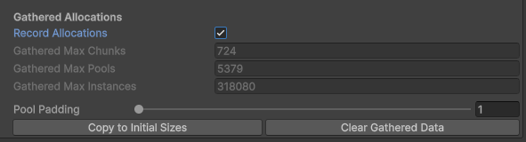

Important Tips
Practical advice for getting the best performance and memory usage out of BRG Instanced Renderer.
Size Your Initial Allocations
GPU buffers grow automatically when capacity is exceeded, but resizing involves copying all buffer data and causes a one-time hitch. To avoid this:
- Enable Record Allocations in the Config
- Play your scene and exercise worst-case scenarios
- Click Copy to Initial Sizes to use the recorded peaks as starting values
This eliminates runtime buffer growth entirely.

Understand Pool Utilization
Instances are stored in fixed-size pools of 64 slots each. A pool is allocated as a whole block — if a pool only holds 1 instance, the other 63 slots are wasted GPU memory.
You can monitor pool utilization in the System Window under Chunk System > Pool Utilization.
What Causes Low Utilization
- Sparse chunks — A chunk with very few instances still allocates at least one full pool. If you have many chunks each holding only a handful of instances, you waste a pool per chunk.
- Removing instances over time — As instances are removed, pools become partially empty but stay allocated.
How to Improve Utilization
Use an appropriate chunk size for your instance density. Smaller chunks improve culling precision but create more chunks, each requiring at least one pool. If chunks end up with only a few instances each, most of each pool is wasted. In practice, saving GPU memory with fewer, well-filled chunks matters more than having highly precise culling. Match chunk size to your placement density so chunks stay well-filled.
Chunk Size Matters
For BRG Terrain Registerer, chunk size controls culling granularity:
- Smaller chunks = more precise culling, but more chunks to process and potentially lower pool utilization.
- Larger chunks = fewer chunks, better pool utilization, but less precise culling.
The default tree chunk size (256m) and detail chunk size (32m) work well for most terrains.
Snap Crossfade on Load
When instances already exist in the world (e.g. scene load, save restore), crossfade animations should be skipped so everything doesn't fade in at once:
- Terrain details: Enable Snap Crossfade On Start on the BRG Terrain Registerer (enabled by default).
- All cameras at once: Call
SnapAllCrossfadeStates()after teleportation or scene load. - Single camera: Call
SnapCrossfadeState(camera)to snap one camera's view.